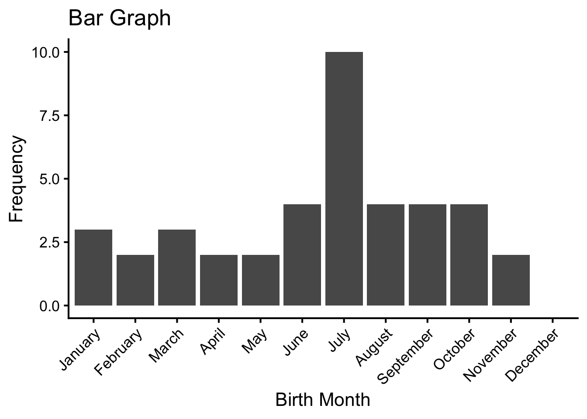
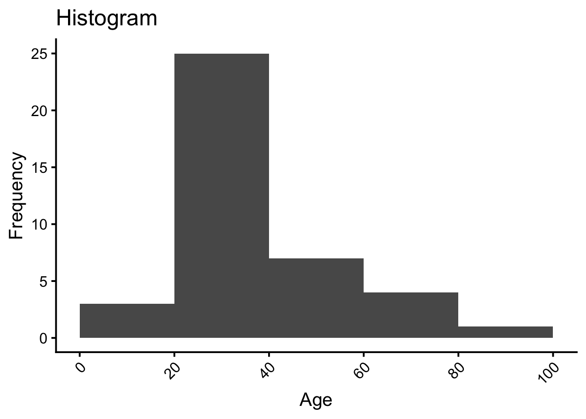
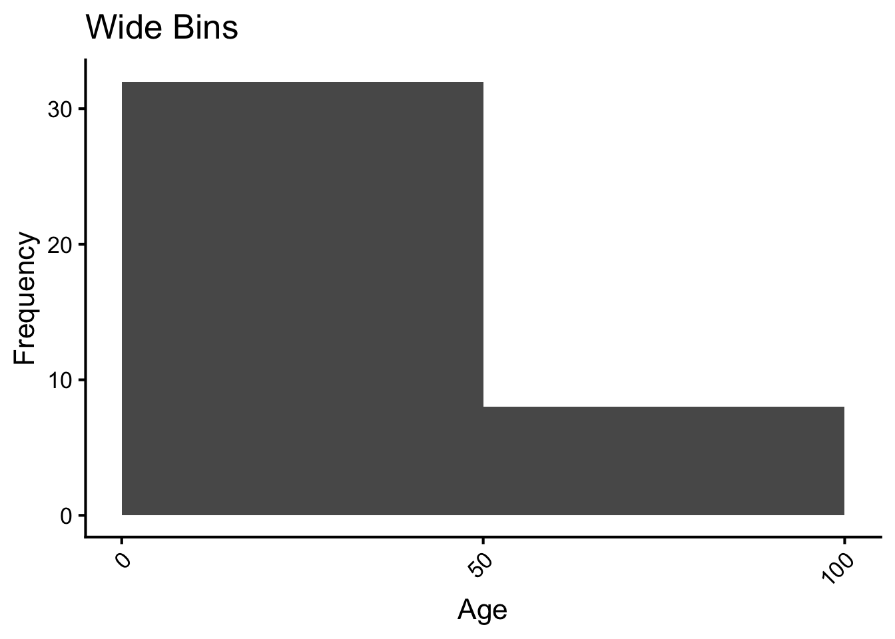
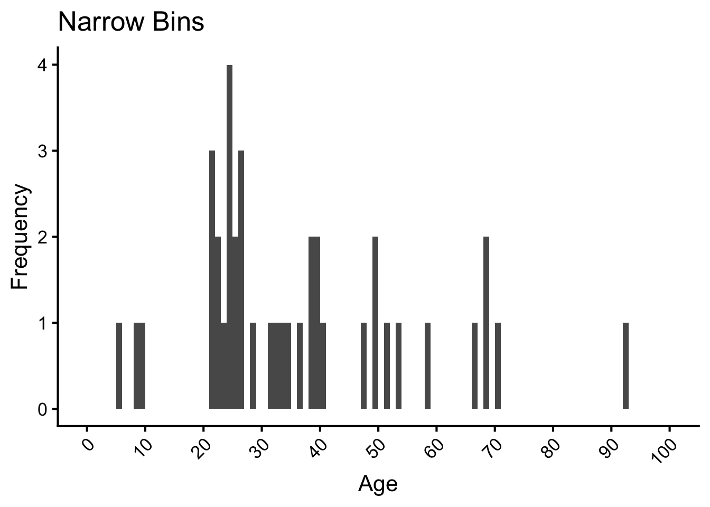
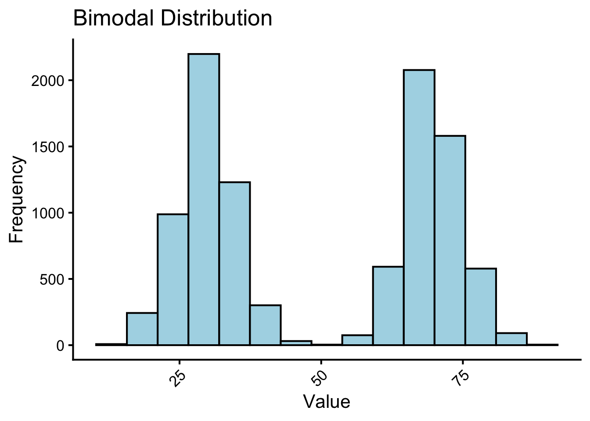
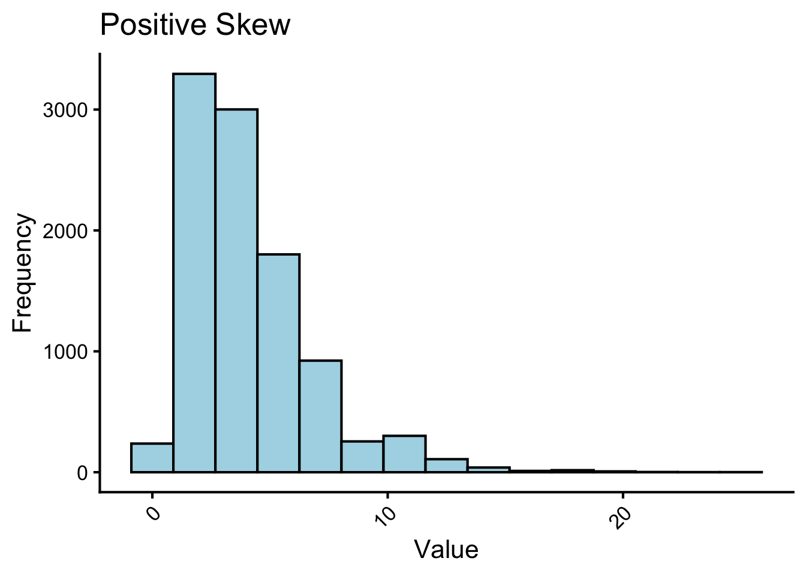
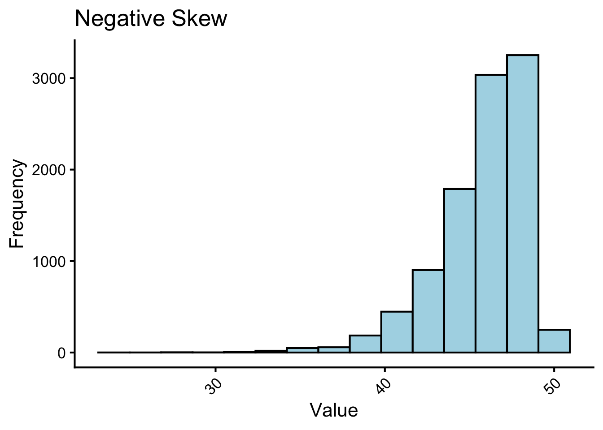
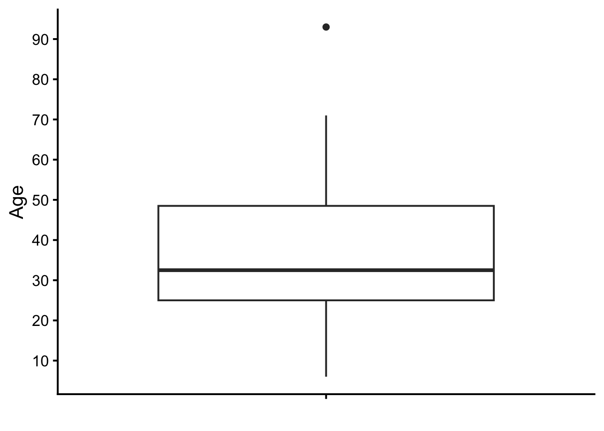
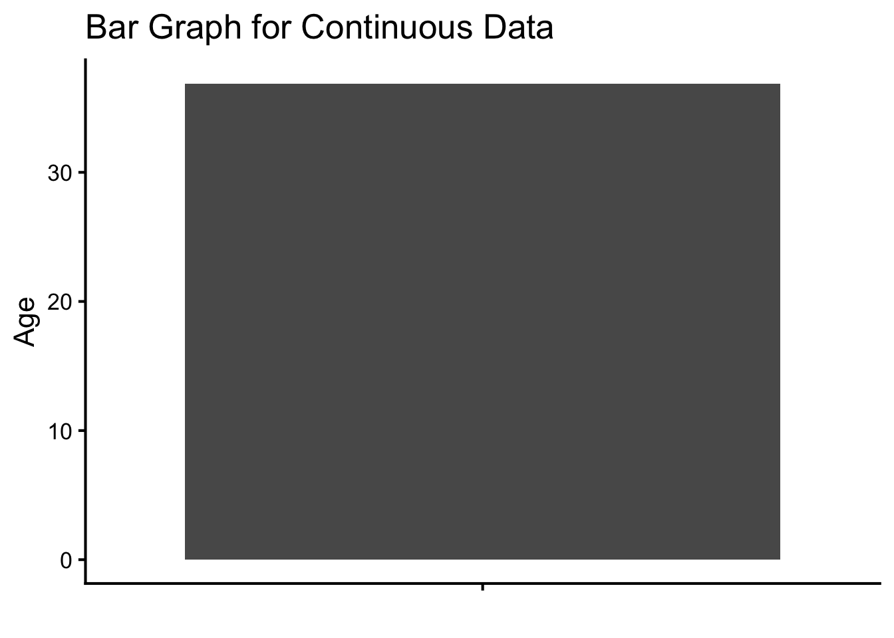
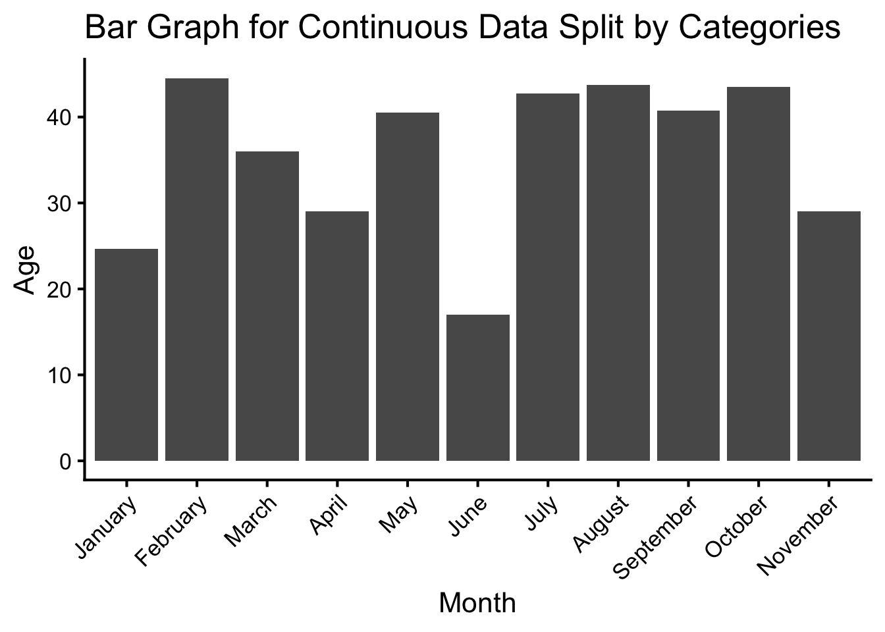

| Month | n | percent |
|---|---|---|
| January | 3 | 8% |
| February | 2 | 5% |
| March | 3 | 8% |
| April | 2 | 5% |
| May | 2 | 5% |
| June | 4 | 10% |
| July | 10 | 25% |
| August | 4 | 10% |
| September | 4 | 10% |
| October | 4 | 10% |
| November | 2 | 5% |
| December | 0 | 0% |
| Total | 40 | 100% |
Visualizing and Describing Data
Before we can understand our statistical analyses, we must first understand our data. Imagine you have a big pile of data. How do you make sense of it? How would you describe your data? The complete description of the data is always the data itself, and it is important to inspect the data to make sure it is appropriate for the analyses you want to do. In this chapter, we will first learn how to visualize the data such that the visuals reveal some important characteristics of the data. Then, we will learn how to describe the data by summarizing them in terms of their key characteristics: typical values (central tendency), the spread (variability), and the shape of the distribution.
1 Visualizing Data
The first thing to do when you have a fresh set of data is to visualize it. Visualizing the data allows us to see what the data look like and to check for any unusual patterns.
1.1 Distribution
When we visualize data, we are often interested in the distribution of the data. The distribution is just a re-organization of the data without compressing it into a single number.
1.1.1 Categorical Data: How common is each value?
For categorical data, we can tally how common each value is to find some patterns of the data. For this, we will use the example of birth months. In a sample of 40 people, I asked each person what month they were born in. The responses were:
- July
- August
- July
- September
- July
- July
- June
- February
- July
- August
- October
- June
- May
- January
- July
- August
- July
- September
- July
- July
- June
- February
- July
- August
- October
- June
- May
- January
- September
- October
- November
- March
- April
- January
- September
- October
- November
- March
- April
- March
Can you see any patterns in the data? For example, are there more people born in some months than others? Are more people born in the summer or in the fall (assuming everyone is born in the Northern Hemisphere)? How about the fall versus the winter? You may be able to answer these questions by inspecting every entry in the data because there are only 40 entries here. But what if there were 100 entries? Or 1,000 entries? It would be very difficult to see patterns in the data by inspecting every entry. Instead, we can summarize the data in a table or graph to see the patterns more clearly.
1.1.1.1 Frequency Tables
In simple terms, frequency tables are just the tally of how often each value occurs in the data. For example, in Table 1 that shows birth months in a sample of 40 people, the frequency of “August” is 4. Note that all available response categories are included in the table, even if there are no responses in some categories. They also show the relative frequencies or percentages (“percent” column in Table 1).
This gives you a quick sense of the distribution of the data. For example, in this sample, there are 18 people born between June and August, which is almost half of the sample.
Note that there is only a minimal “compression” of the data in the frequency table. From the table, we can recreate the original data by repeating each response category according to its frequency. For example, we can recreate the original data by repeating “July” 5 times, “August” 2 times, and so on.
1.1.1.2 Bar Graphs
While frequency tables are useful, it is often easier to see the distribution of the data in a graph. Bar graphs represent the frequencies of categorical responses as bars. The levels are discrete, and the bars are separated with some gaps between them. The height of the bar on the y-axis represents the frequency of that response category.
Figure 1 is the same data as in Table 1, but represented as a bar graph. Is it easier to pick out the most common birth month in the bar graph than in the table? What about the second most common birth month? The bar graph makes it easier to see the distribution of the data than the table does.
This chart has title 'Bar Graph'.
It has x-axis 'Birth Month' with labels January, February, March, April, May, June, July, August, September, October, November and December.
It has y-axis 'Frequency' with labels 0.0, 2.5, 5.0, 7.5 and 10.0.
The chart is a bar chart with 11 vertical bars.
Note that the birth months are ordered from January to December, which is the natural order of the months. If we are working with nominal data (e.g., favorite fruit), we would not have a natural order of the levels.
1.1.2 Numerical, Continuous Data: How common is each range of values?
For numerical, continuous data like interval and ratio data, we don’t care about how many people have a particular value (e.g., 23 years and 5 months and 10 days old versus 23 years and 6 months and 15 days old). Instead, we care about how common each range of values is. For example, if we measure the age of 40 people, we might find that there are many people who are between 20 and 40 years old, but very few people who are between 80 and 100 years old.
1.1.2.1 Histograms
Histograms are a type of bar graph for continuous data, where the bars are touching each other. The x-axis is divided into bins of equal width that represent ranges of values. The height of the bar on the y-axis represents the frequency of values that fall into that bin.
This chart has title 'Histogram'.
It has x-axis 'Age' with labels 0, 20, 40, 60, 80 and 100.
It has y-axis 'Frequency' with labels 0, 5, 10, 15, 20 and 25.
The chart is a bar chart with 5 vertical bars.
Bar 1 is centered at 10, and length is from 0 to 3.
Bar 2 is centered at 30, and length is from 0 to 25.
Bar 3 is centered at 50, and length is from 0 to 7.
Bar 4 is centered at 70, and length is from 0 to 4.
Bar 5 is centered at 90, and length is from 0 to 1.
Lower bounds are inclusive, and upper bounds are exclusive. For example, the first bin includes ages 0 to 19, the second bin includes ages 20 to 39, and so on. The last bin includes ages 80 to 99.
Note that now there is some compression of the data. We no longer can recreate the original data from the histogram because we have lost information about the exact values of the data. It is important to choose the bin width carefully. If the bins are too wide, we may lose important information about the distribution of the data. If the bins are too narrow, we may see too much noise in the data and will not be able to see the overall pattern of the distribution. To illustrate this, Figure 3 shows the same data as in Figure 2, but with wider bins. The overall pattern of the distribution is still visible, but we have lost some information about the distribution of the data. In contrast, Figure 4 shows the same data as in Figure 2, but with narrower bins. We can see more details about the distribution of the data, but it is harder to see the overall pattern of the distribution. How wide or narrow should your histogram be? It’s a Goldilocks question. Make it just right for your data.
This chart has title 'Wide Bins'.
It has x-axis 'Age' with labels 0, 50 and 100.
It has y-axis 'Frequency' with labels 0, 10, 20 and 30.
The chart is a bar chart with 2 vertical bars.
Bar 1 is centered at 25, and length is from 0 to 32.
Bar 2 is centered at 75, and length is from 0 to 8.
This chart has title 'Narrow Bins'.
It has x-axis 'Age' with labels 0, 10, 20, 30, 40, 50, 60, 70, 80, 90 and 100.
It has y-axis 'Frequency' with labels 0, 1, 2, 3 and 4.
The chart is a bar chart with 100 vertical bars.
1.1.2.2 Noting the Shape of the Distribution
As we visualize the data, we can note the shape of the distribution.
The primary characteristic we are concerned about when assessing the shape of a distribution is whether the distribution is symmetrical or skewed. A symmetrical distribution, as the name suggests, can be cut down the center to form two mirror images. The normal distribution has a single peak, known as the center, and two tails that extend out equally, forming what is known as a bell shape or bell curve.
This chart has title 'Symmetrical Distribution'.
It has x-axis 'Value' with labels 25, 50 and 75.
It has y-axis 'Frequency' with labels 0, 500, 1000, 1500 and 2000.
The chart is a bar chart with 15 vertical bars.
It has colour set to black.
It has fill set to very light greenish blue.Symmetrical distributions can also have multiple peaks. Figure 6 shows a bimodal distribution, named for the two peaks that lie roughly symmetrically on either side of the center point. Bimodal distributions can arise when there are two different groups in the data. This is a relatively difficult characteristic to detect in numerical summary of the distribution. Thus, it is important to visualize your data before moving ahead with any formal analyses.
This chart has title 'Bimodal Distribution'.
It has x-axis 'Value' with labels 25, 50 and 75.
It has y-axis 'Frequency' with labels 0, 500, 1000, 1500 and 2000.
The chart is a bar chart with 15 vertical bars.
It has colour set to black.
It has fill set to very light greenish blue.
Distributions that are not symmetrical also come in many forms, more than can be described here. The most common asymmetry to be encountered is referred to as skew, in which one of the two tails of the distribution is disproportionately longer than the other. This property can affect the value of the averages we use in our analyses and make them an inaccurate representation of our data, which causes many problems.
Skew can either be positive or negative (also known as right or left, respectively), based on which tail is longer. It is very easy to get the two confused at first; many students want to describe the skew by where the bulk of the data (larger portion of the histogram, known as the body) is placed, but the correct determination is based on which tail is longer1.
Figure 7 shows a positively skewed distribution, where the tail is longer on the right side of the distribution. Figure 8 shows a negatively skewed distribution, where the tail is longer on the left side of the distribution.
This chart has title 'Positive Skew'.
It has x-axis 'Value' with labels 0, 10 and 20.
It has y-axis 'Frequency' with labels 0, 1000, 2000 and 3000.
The chart is a bar chart with 15 vertical bars.
It has colour set to black.
It has fill set to very light greenish blue.
This chart has title 'Negative Skew'.
It has x-axis 'Value' with labels 30, 40 and 50.
It has y-axis 'Frequency' with labels 0, 1000, 2000 and 3000.
The chart is a bar chart with 15 vertical bars.
It has colour set to black.
It has fill set to very light greenish blue.
1.2 Summary of Continuous Data
1.2.1 Box Plots
Box plots visually compress the data a bit more, showing the range of the middle 50% of the data (called the interquartile range, or IQR) with the middle value (called the median). Additionally, they show the range of the data set excluding outliers, and the outliers themselves.
This is an untitled chart with no subtitle or caption.
There is no x-axis.
It has y-axis 'Age' with labels 10, 20, 30, 40, 50, 60, 70, 80 and 90.
The chart is a boxplot comprised of 1 vertical box with whiskers.
There is a box at x=1.
It has median 32.5. The box goes from 25 to 48.5, and the whiskers extend to 6 and 71.
There are 1 max and 0 min outliers for this boxplot.
The thick horizontal line in the middle of the box in Figure 9 indicates the middle value of the data, which is called the median. This means that if you line up everyone in the sample from youngest to oldest, the person in the middle is about 30 years old.
If we only have the median, we don’t know anything about the rest of the data. The data may comprise of most people aged between 30 and 35, or it could be that many different age groups are represented in the data. The box in the box plot gives you an idea of the range of the middle 50% of the data. The bottom of the box (called lower hinge) is the 25th percentile (called 1st quartile because the data are divided into four quarters, hence quart). The top of the box (called upper hinge) is the 75th percentile (called 3rd quartile). The range of the middle 50% of the data is called the interquartile range (IQR).
Still, we also want to know about the full range of the data. Are there 90 years old people in the sample? What about the youngest? The whiskers extend to the minimum and maximum values of the data, excluding outliers. Outliers are defined as values that are more than 1.5 times the IQR above the upper hinge or below the lower hinge. In Figure 9, there is one outlier above the whiskers at around 90 years old.
Box plots provide basic information about a distribution. For example, a distribution with a positive skew would have a longer whisker in the positive direction than in the negative direction. Box plots are good at portraying extreme values and are especially good at showing differences between distributions. However, the details of a distribution start getting compressed and lost in a box plot. Now we are entering into the realm of summarizing the data.
1.2.2 Bar Graphs
Looking ahead, what we want to do is to compare the distributions by asking whether the typical values of the distributions are different. For this, we use bar graphs. Not to be confused with the bar graphs we used for categorical data, but the height of the bar represents the mean of the distribution, as shown in Figure 10.
This chart has title 'Bar Graph for Continuous Data'.
There is no x-axis.
It has y-axis 'Age' with labels 0, 10, 20 and 30.
The chart is a bar chart with 1 vertical bar.
Bar 1 is centered at 1, and length is from 0 to 36.88.
This may not look like much, and you are right. It’s just a single bar. But this type of visualization is useful when we want to compare the means of different groups. For example, if we want to compare the mean age across birth months, we can use a bar graph to compare the heights of the bars that represent the mean age for each birth month, as shown in Figure 11.
This chart has title 'Bar Graph for Continuous Data Split by Categories'.
It has x-axis 'Month' with labels January, February, March, April, May, June, July, August, September, October and November.
It has y-axis 'Age' with labels 0, 10, 20, 30 and 40.
The chart is a bar chart with 11 vertical bars.
This is the most compressed representation yet, and it is important to remember that we are losing a lot of information about the distribution when we use bar graphs or point plots. The mean is a point estimate of the typical value, and if we are going to use the mean to compare the distributions, we need what’s called “error bars” to show how much error there is in the estimate of the mean. We will learn more about this in the later chapters. For now, remember that we have compressed our very complicated data into this one single height of the bar, which is the mean. We now have lost all information about the shape of the data.
1.3 Describing Data with Descriptive Statistics
We started with the raw data and visualized the data to see the whole ditribution, and gradually, we have compressed the data into a fewer number of values. That’s what descriptive statistics are all about: summaries of the data that describe the key characteristics of the distribution. The most important characteristics of a distribution are its typical values (central tendency), the spread (variability), and the shape of the distribution.
Footnotes
If this is any helpful, think of SKEWered lobster TAILS.↩︎